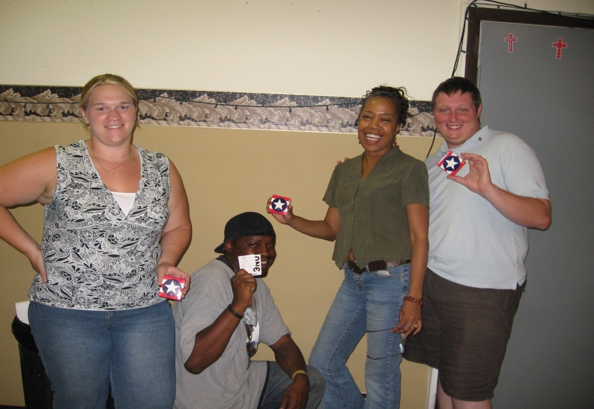

Therapeutic, Social, Educational and Advocacy Services
Welcome to the Sisterhood
Welcome to the Sisterhood, Women Living with HIV-Caring For, Educating and Supporting One Another. Weekly meetings covering a range of activities and education designed to promote interdependency and self-sufficiency.
Community Based Learning
Currently Imani Unidad works with the University of Notre Dame Center for Social Concerns (CSC) as a Community-Based Learning Coordination site. The CSC understands that the formal education of students who become involved in the local community extends beyond the classroom and that the students encounter people in the community who become their teachers as well as their supervisors. The Community-Based Learning Coordinators (CBLC) who work with the Center for Social Concerns are a great resource to students, and it is a pleasure to introduce students to some of the finest teachers in South Bend. The CBLCs are available to help students find placements in their agencies that meet both the needs of the community-based organization and the student. They are aware of the importance of finding ways to connect the students' real life experiences with their academic work. In addition, they are committed to making reflection a part of the student's experience in their organizations.
In addition to working with students, the CBLCs serve as resources to faculty by assisting them in creating course-related community-based learning opportunities. The Center for Social Concerns is able to inform and educate students, faculty, and staff about community service and social action because of this valuable resource. The Community-Based Learning Coordinators are willing and able to find the right placements for students who come to them either individually or as part of a course related assignment.
Comprehensive Risk Counseling Services
An intensive individualized prevention program for those who are HIV positive or have substance abuse issues that put them at high risk for HIV infection. The goals of this program are primary and secondary prevention, to decrease social isolation, increase the number of individuals who are actively engaged in educational or employment opportunities, create healthy social structures, improve self-image and to reduce high risk behaviors.
Community Level Intervention
Provides education, awareness and training for the community as a whole with an emphasis on the African American community. Activities are conducted in churches, recreational centers, homeless center, school/colleges and at major community events. We provide training on HIV and substance abuse by certified prevention specialists. Free HIV/Hep B, C/Syphilis testing as requested.
Community Action Group
The CAG program is a network of grassroots organizations that provide HIV education in the community according to their specific needs and standards. We provide technical assistance, training and resources to the member. Offer HIV certification requirements for licensure, prevention work and continuing ED. We also work together to plan and coordinate events for World AIDS Day, National HIV Get Tested Day, National Women and Girls HIV Awareness Day, the Candlelight Memorial, etc.
Women and AIDS Coalition
Hosts an annual conference featuring a variety of informational workshops and inspiring topics. Areas of focus include the many issues of which the men, women and children living with HIV/AIDS are challenged with in everyday life.
Living and Loving
Offers education and skills based activities for establishing healthy relationships. Offers opportunities for adults to practice communication, decision making, critical thinking, coping and health planning skills.
Teen Peer Education

This project offers comprehensive skills building activities and prevention information to establish a foundation of knowledge which will be transferable to any threat to the health and well-being of youth. It provides youth a safe environment in which to examine their own beliefs, attitudes and values to introduce multiple options for maintaining healthh behaviors, serve as long term support and provide opportunities to know one’s own self-worth by contributing to betterment of self, family and community.
Peer to Peer Mentoring and Supportive Services
We offer a group level intervention for ex-offenders and those wanting to break the cycle of recidivism. Through this special relationship, peer mentors provide advice and support and serve as role models for those wanting to effect positive behavior change. We focus on relationships, healthy behaviors, overcoming challenges facing ex-offenders in the reintegration process and provide an environment for them to address their very real and specific issues. Our goal is individualized personal restorative justice and reintegration in community as whole human beings.
Ex-offenders Information and Referral Services (EIRS)
Assists individuals with criminal records to locate and apply for services that will enhance and improve their lives.
Services offered by EIRS are:
Referrals to appropriate organizations
Assistance with applying for service from various organizations
Help with job hunting(making of resumes, practice interviews, on-line applications)
Training on on-line access
Emotional support as needed
EIRS assists with applications for college, financial aid, GED/ high school transcripts, Social Security Disability, unemployment benefits, Assure cell telephones, SNAP (food stamps) and Vocational Rehabilitation and criminal record expungement.
What is the Youth Reconciliation Process?
Youth Reconciliation Process is an alternative to the juvenile justice system, and involves peer
led findings of fact and sanctioning of young people. The emphasis of a youth reconciliation
process is community based, law-related education, as young people volunteer to serve as jurors
and may also potentially have the roles akin to prosecuting attorney, defense attorney, bailiff, or
even judge. Law-related education, as facilitated in youth reconciliation, equips youth with the
ability to function effectively in a pluralistic, democratic society based on the rule of law. In
each case, both the student volunteers and the offenders learn about the laws that were broken,
consequences, and how due process is observed by courtroom procedure. Additionally, from
hands-on learning, both volunteers and offenders develop a greater understanding of concepts of
justice, power, equality, property, and liberty. Such concepts of which form the basis of strong
and humane values. Young offenders may voluntarily, with the consent of their parent or
guardian, choose to participate in the youth reconciliation process. Reconciliation packages
imposed upon a finding of fact , commonly include community service, jury duty, counseling,
educational workshops on substance abuse, drug testing, essay writing, victim-awareness classes,
and peer discussion groups. The Youth Reconciliation Process is for, but not limited to, first
time offenders under the age of 18, and the most common offenses include, but are not limited
to, theft, vandalism, alcohol use, disorderly conduct, assault, possession of marijuana, tobacco
use, and curfew violations. With the implementation of youth reconciliation, juvenile justice in
South Bend will shift from punitive to restorative, allowing for education, rehabilitation, and
empowerment.
Our goal is to create a community where the dynamic between the youth and the criminal justice
system is one with an emphasis on reconciliation, as opposed to retribution. We would like to
build, rehabilitate, and restore the youth who are victims of structural and cultural violence
through the implementation of a Youth Reconciliation Process in South Bend.
*Imani Unidad, Inc. does not discriminate in the provision of services on the basis of race, color, ethnicity, national origin, citizenship, immigration status, sex, gender, gender identity, relationship, affectional preference, sexual nature, lifestyle, religion, creed, belief, political views, occupation, addiction, financial status, handicap, physical or mental disability, ability, age, housing status, criminal history, veteran status, HIV exposure source, or any other artificial distinction used to separate and divide people.